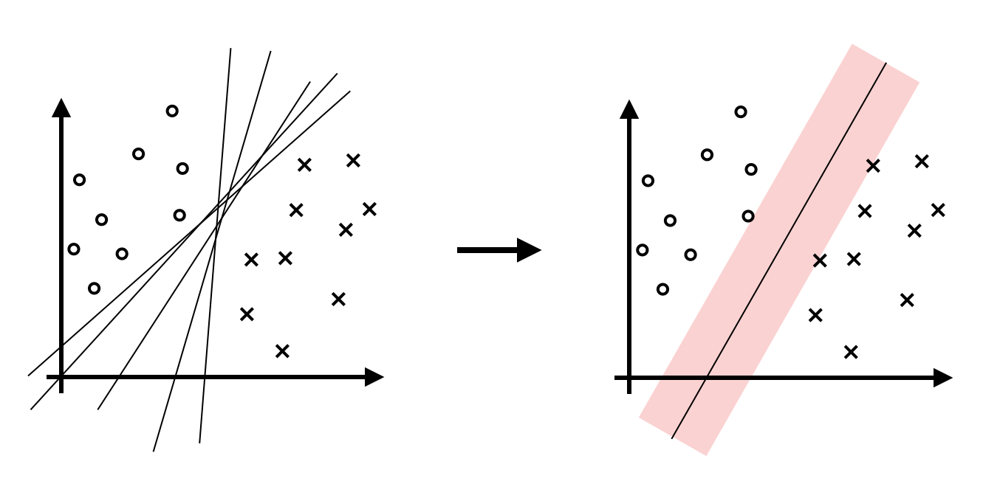

Support Vector Machine
支持向量机 (SVM) 是一种基于间隔最大化的线性分类器。
- 当数据线性可分时，通过硬间隔最大化，可学习硬间隔支持向量机（线性可分支持向量机）；
- 当数据近似线性可分时，通过软间隔最大化，可学习软间隔支持向量机（线性支持向量机）；
- 当数据线性不可分时，利用核技巧以及软间隔最大化，可学习一般的非线性支持向量机。
在本文中，记数据集为 \(D=\{(\mathbf x_1,y_1),\ldots,(\mathbf x_n,y_n)\}\)，其中 \(\mathbf x_i\in\mathcal X=\mathbb R^d,\,y_i\in\mathcal Y=\{-1,+1\}\).
线性可分与硬间隔最大化
基本思想
当数据是线性可分时，存在无数多个超平面 \(\mathbf w^T\mathbf x+b=0\) 都可以作为决策平面，超平面一侧是正类，另一侧是负类。朴素地想，在这些超平面中，找到间隔数据点最远的那个超平面，应该是最为稳妥的。

根据一些几何学知识可以知道，点 \(\mathbf x_i\) 到平面 \(\mathbf w^T\mathbf x+b=0\) 的距离为 \(\frac{|\mathbf w^T\mathbf x_i+b|}{\Vert\mathbf w\Vert}\). 特别地，由于正类的数据点满足 \(\mathbf w^T\mathbf x_i+b>0\)，负类反之，所以绝对值可以去掉： \[ d(\mathbf x_i)=\frac{|\mathbf w^T\mathbf x_i+b|}{\Vert\mathbf w\Vert}=\begin{cases}+(\mathbf w^T\mathbf x_i+b)/\Vert\mathbf w\Vert,&y_i=+1\\-(\mathbf w^T\mathbf x_i+b)/\Vert\mathbf w\Vert,&y_i=-1\end{cases}\quad=\frac{y_i(\mathbf w^T\mathbf x_i+b)}{\Vert\mathbf w\Vert} \] 于是，超平面与数据点的最小间隔为： \[ \min_{\mathbf x_i\in D}\;\frac{y_i(\mathbf w^T\mathbf x_i+b)}{\Vert\mathbf w\Vert} \] 那么，最大化最小间隔就可以写为如下优化问题： \[ \begin{align} \max_{\mathbf w,b}\min_{\mathbf x_i,y_i\in D}\quad&\frac{y_i(\mathbf w^T\mathbf x_i+b)}{\Vert\mathbf w\Vert}\\ \text{s.t.}\quad&y_i(\mathbf w^T\mathbf x_i+b)>0,&\forall i=1,\ldots,n \end{align} \] 注意到同时放缩 \(\mathbf w,b\) 并不改变超平面，从而也不改变优化目标，因此我们完全可以将约束条件改写作 \(y_i(\mathbf w^T\mathbf x_i+b)\geq 1\)，即： \[ \begin{align} \max_{\mathbf w,b}\min_{\mathbf x_i,y_i\in D}\quad&\frac{y_i(\mathbf w^T\mathbf x_i+b)}{\Vert\mathbf w\Vert}\\ \text{s.t.}\quad&y_i(\mathbf w^T\mathbf x_i+b)\geq 1,&\forall i=1,\ldots,n \end{align} \] 这样，只要约束条件的符号是正确的，那么我们只需要放缩 \(\mathbf w,b\)，必然也能满足新的约束条件，所以改写前后问题是等价的。
进一步地，在新的约束条件下，优化目标中的最小间隔可以写作： \[ \min_{\mathbf x_i,y_i\in D}\;\frac{y_i(\mathbf w^T\mathbf x_i+b)}{\Vert\mathbf w\Vert}\geq\min_{\mathbf x_i,y_i\in D}\;\frac{1}{\Vert\mathbf w\Vert}=\frac{1}{\Vert\mathbf w\Vert} \] 其中等号是一定能够取到的（因为我们的目标是最小化，如果没取到，那就不是最小），所以优化问题改写作： \[ \begin{align} \max_{\mathbf w,b}\quad&\frac{1}{\Vert\mathbf w\Vert}\\ \text{s.t.}\quad&y_i(\mathbf w^T\mathbf x_i+b)\geq 1,&\forall i=1,\ldots,n \end{align} \] 最大化 \(1/\Vert\mathbf w\Vert\) 等价于最小化 \(\frac{1}{2}\Vert\mathbf w\Vert^2\)，所以问题继续改写作： \[ \begin{align} \min_{\mathbf w,b}\quad&\frac{1}{2}\Vert\mathbf w\Vert^2\\ \text{s.t.}\quad&y_i(\mathbf w^T\mathbf x_i+b)\geq 1,&\forall i=1,\ldots,n \end{align} \] 现在问题转化为了一个凸二次规划问题，在优化理论中人们对凸二次规划已经有着非常成熟的研究，直接调用相关算法求解即可。
对偶问题
对于上一节最终得到的优化问题，除了直接求解以外，我们也可以尝试求解其对偶问题。
首先构建 Lagrange 函数。对每个约束条件引入一个 Lagrange 乘子 \(\alpha_i\geq0\)，定义 Lagrange 函数为： \[ L(\mathbf w,b,\alpha)=\frac{1}{2}\Vert\mathbf w\Vert^2-\sum_{i=1}^n\alpha_i(y_i(\mathbf w^T\mathbf x_i+b)-1) \] 其中 \(\alpha=(\alpha_1,\ldots,\alpha_n)^T\). 那么原问题和对偶问题分别为： \[ \min_{\mathbf w,b}\;\underbrace{\max_\alpha L(\mathbf w,b,\alpha)}_{\text{Primal}(\mathbf w,b)}\iff \max_\alpha\;\underbrace{\min_{\mathbf w,b}L(\mathbf w,b,\alpha)}_{\text{Dual}(\alpha)} \] 考虑 \(\text{Dual}(\alpha)\)，取 Lagrange 函数对 \(\mathbf w,b\) 求导并令为零： \[ \begin{align} &\frac{\partial L}{\partial \mathbf w}=\mathbf w-\sum_{i=1}^n\alpha_iy_i\mathbf x_i=0&&\implies \mathbf w=\sum_{i=1}^n\alpha_iy_i\mathbf x_i\\ &\frac{\partial L}{\partial b}=-\sum_{i=1}^n\alpha_iy_i=0&&\implies \sum_{i=1}^n\alpha_iy_i=0 \end{align} \] 代入 \(\text{Dual}(\alpha)\) 化简得： \[ \text{Dual}(\alpha)=\min_{\mathbf w,b}L(\mathbf w,b,\alpha)=-\frac{1}{2}\sum_{i=1}^n\sum_{j=1}^n\alpha_i\alpha_jy_iy_j\mathbf x_i^T\mathbf x_j+\sum_{i=1}^n\alpha_i \] 因此原问题转化为如下对偶问题： \[ \begin{align} \min_\alpha\quad&\frac{1}{2}\sum_{i=1}^n\sum_{j=1}^n\alpha_i\alpha_jy_iy_j\mathbf x_i^T\mathbf x_j-\sum_{i=1}^n\alpha_i\\ \text{s.t.}\quad&\sum_{i=1}^n\alpha_iy_i=0\\ &\alpha_i\geq 0,\quad i=1,\ldots,n \end{align} \] 支持向量机的优化问题满足强对偶条件，因此原问题与对偶问题的最优解是相同的。对比对偶问题和原问题，我们可以发现对偶问题的优化目标变得更复杂了，但约束条件变简单了，而且依然是一个凸二次规划问题，可以直接调用二次规划算法求解。
支持向量
假设我们已经求解出了最大间隔超平面，那么到超平面距离最近的那些样本称作支持向量。事实上，支持向量机的解只依赖于这些支持向量，去掉其他样本对解没有任何影响。
支持向量使得原问题约束条件的等号正好成立，也就是说两类支持向量分别在 \(\mathbf w^T\mathbf x_i+b=1\) 和 \(\mathbf w^T\mathbf x_i+b=-1\) 上。进一步地，设对偶问题的最优解为 \(\alpha\)，那么根据 KKT 条件的互补松弛性条件，有： \[ \alpha_i(y_i(\mathbf w^T\mathbf x_i+b)-1)=0,\quad\forall i=1,\ldots,n \] 可以看见，对于支持向量，由于它们满足 \(y_i(\mathbf {w^\ast}^T\mathbf x_i+b)-1=0\)，所以为了最小化优化目标，有 \(\alpha_i>0\)；相反，对于非支持向量的样本点，为了满足 KKT 条件，必有 \(\alpha_i=0\)，如图所示：

线性不可分与软间隔最大化
基本思想
在实际应用中，我们经常会遇到噪声数据点，它们可能导致问题线性不可分。为了解决这个问题，可以对每个样本点 \((\mathbf x_i,y_i)\) 引入一个松弛因子 \(\xi_i\geq 0\)，将约束条件放松为 \(y_i(\mathbf w^T\mathbf x_i+b)\geq 1-\xi_i\). 当然，我们并不希望 \(\xi_i\) 任意地大，否则约束条件也没啥用了，因此在优化目标中加入 \(\xi_i\)，并用超参数 \(C>0\) 做一个权衡： \[ \begin{align} \min_{\mathbf w,b}\quad&\frac{1}{2}\Vert\mathbf w\Vert^2+C\sum_{i=1}^n\xi_i\\ \text{s.t.}\quad&y_i(\mathbf w^T\mathbf x_i+b)\geq 1-\xi_i,&\quad\forall i=1,\ldots,n\\ &\xi_i\geq 0,&\forall i=1,\ldots,n \end{align} \] 这依旧是一个凸二次规划问题，所以也可以直接调用相关算法求解。
对偶问题
支持向量
Hinge loss
线性不可分与核函数
核函数
核函数+支持向量机
SMO
我们已经看到，无论是硬间隔最大化、软间隔最大化、亦或是加入核函数的支持向量机，它们最终都建模为了一个凸二次规划问题。到这一步，我们只需要调用很多成熟的凸二次规划求解器即可。不过，对于支持向量机而言，人们最常使用的是一种称为 SMO (Sequential Minimal Optimization) 的方法。